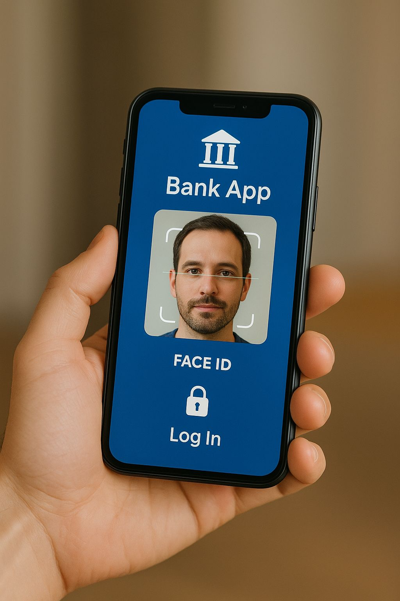
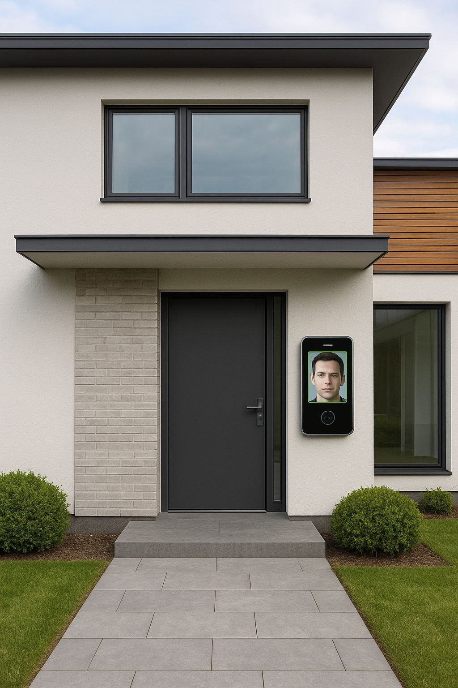
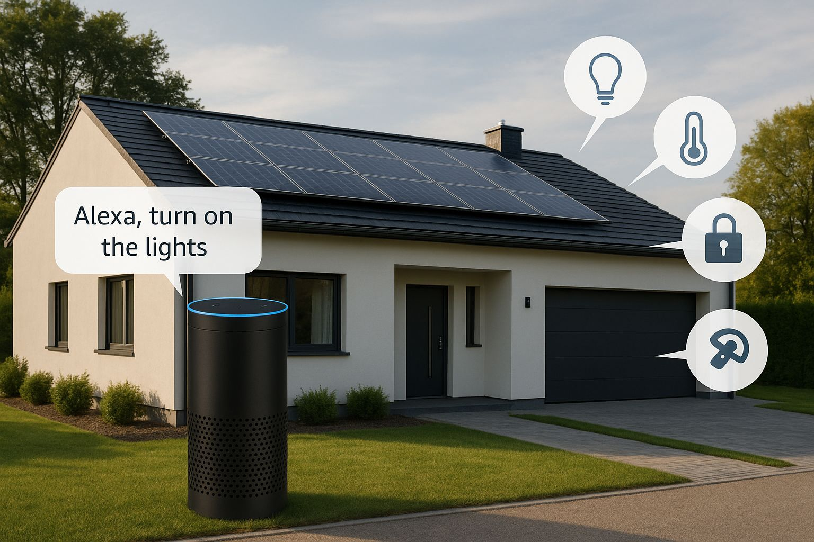
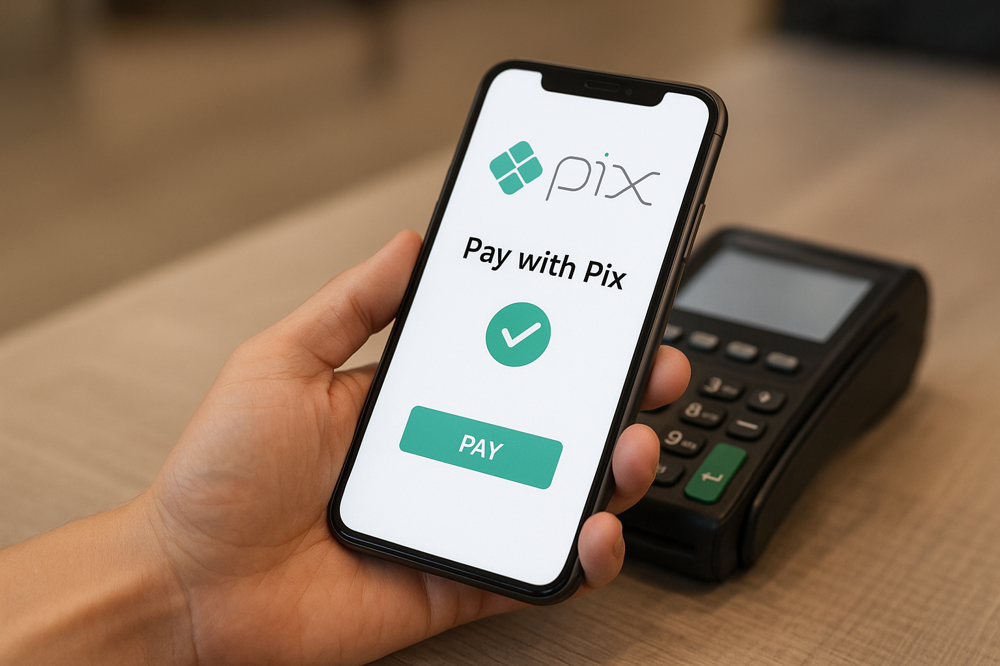
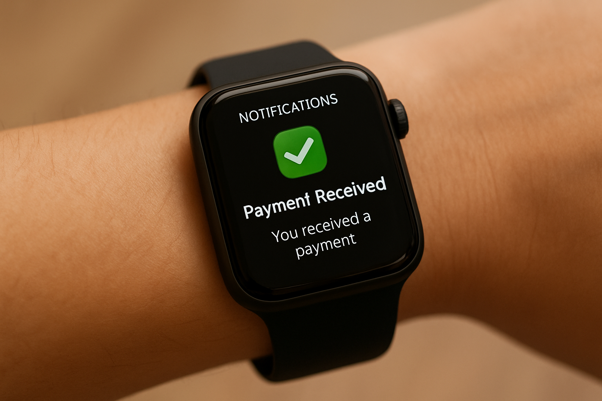
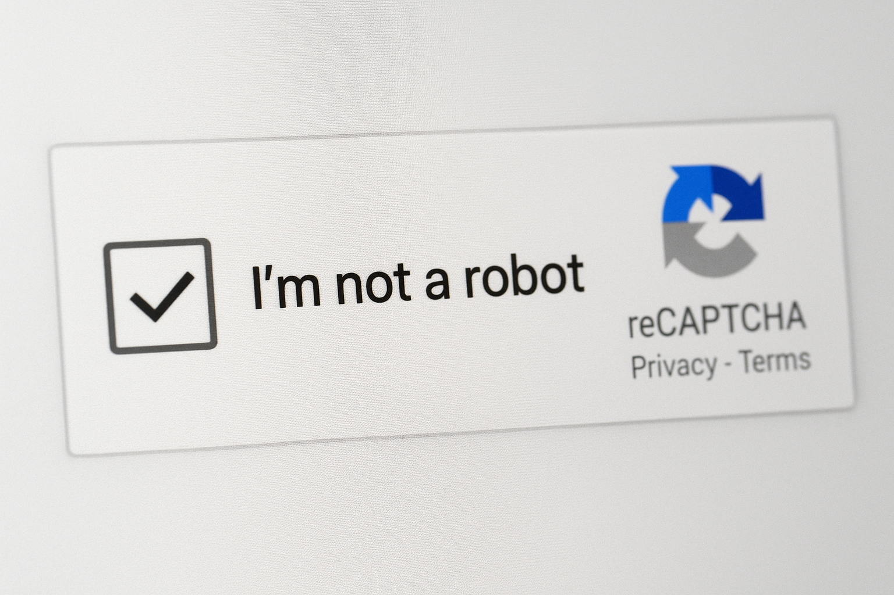
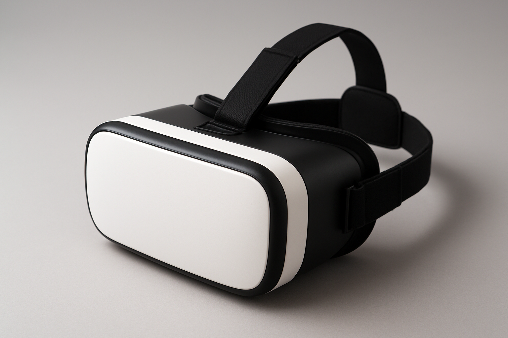
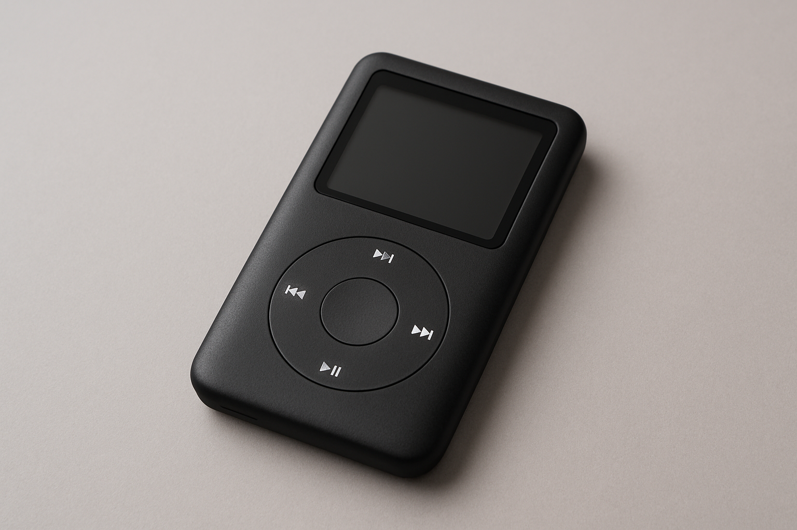

1- Reconhecimento facial - facilita a usabilidade do dia a dia em determinadas atividades como por exemplo: desde desbloquear celulares, abrir a porta de casa, até mesmo como chave de segurança para transferências digitais, completamente intuitivo e seguro aos usuários


2 – Autonomia da Inteligência artificial para residência com integração da Alexa – Acaba trazendo muita facilidade e praticidade para o dia a dia, alguns exemplos de meu uso pessoal: comando para lâmpadas e demais eletros por APP ou voz,
basicamente mesmo longe de casa consigo monitorar câmeras, horários para acender lâmpadas, ligar ar condicionado, televisão etc. Tudo por APP. Já dentro de casa consigo isso com um simples comando de voz

3 - Pix - facilitou a questão de pagamentos, trazendo muito mais proteção pelo simples fato de não ser mais necessario andar com dinheiro em cédulas no dia a dia, e podendo ser feito pagamentos na hora.

4 - Smartwatch - Facilita a visualização de notificações, pagamentos entre outros serviços proporcionados por esse tipo de relógio, eu uso praticamente para vere responder notificações e monitoramento de sono.

04 Produtos não uteis
1 - Processo de verificação reCAPTCHA" - Usabilidade ruim pois muitas vezes a gente clica em cima das. imagens ou digita os caracteres corretos e mesmo assim acaba dando "erro"

2 - óculos de realidade - foram um fracasso devido a uma combinação de fatores, incluindo preços elevados, preocupações com privacidade, falta de utilidade prática e jogos interessantes, desconforto físico para os usuários, e problemas com a tecnologia, como bateria fraca e fios que limitavam a experiência, levando à rejeição do público em massa para produtos como o Google Glass e o PlayStation VR, e mesmo para o caro Apple Vision Pro.

3 - MP3 - O formato MP3 e os aparelhos reprodutores perderam utilidade devido à ascensão de tecnologias mais avançadas e a um ecossistema de áudio mais moderno, como o streaming, que oferece acesso instantâneo a mais músicas e codecs de áudio mais eficientes (como o AAC) com melhor qualidade e menos consumo de dados. A obsolescência também se deu porque os próprios dispositivos MP3 player eram limitados em armazenamento e não ofereciam acesso à internet, tornando-os menos práticos que os smartphones atuai

4 - TV por assinatura - Ainda não morreu no Brasil, mas pode começar a agonizar se não passar por um processo de reformulação após a entrada de players como Netflix no mercado.